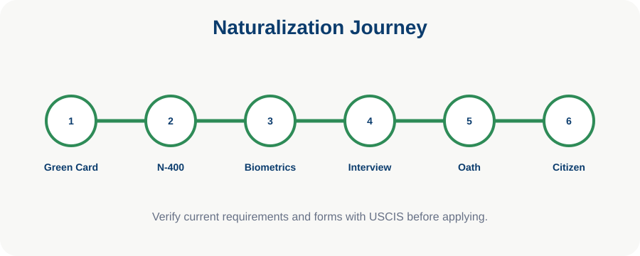

Chapter 26
Your First 30 Days as a U.S. Citizen
The first month after naturalization is the time to protect documents and begin full civic participation.
Understanding is stronger than memorization. This chapter connects facts to meaning and real civic life.
Learning Objectives
- Protect the certificate
- Register to vote and apply for passport
- Update records and participate

Protect Your Certificate
The Certificate of Naturalization is extremely important. Store the original safely, make copies, and do not carry it daily unless needed.
Register and Travel
Eligible new citizens should register to vote and may apply for a U.S. passport using the Certificate of Naturalization.
Update Records
Update Social Security records to show citizenship. Update employer or other records if needed.
Begin Civic Life
Learn representatives, follow elections, attend local meetings, and participate respectfully in community life.
Remember ThisStore your certificate safely.
Milestone 3 Visual Pack: This chapter is now tagged for publication artwork, editorial review, glossary linking, and future citation verification. The final edition should replace any remaining placeholder diagram with a chapter-specific SVG, map, or timeline.

Chapter Summary
- Store your certificate safely.
- Register to vote.
- Apply for a passport.
- Update Social Security.
Key Terms
Constitution · Government · Rights · Citizenship · Federalism · Representation · Rule of Law
Review Questions
- What is the main idea of this chapter?
- How does this chapter connect to the Constitution?
- Why is this topic important for citizenship?
- Give one real-life example from this chapter.